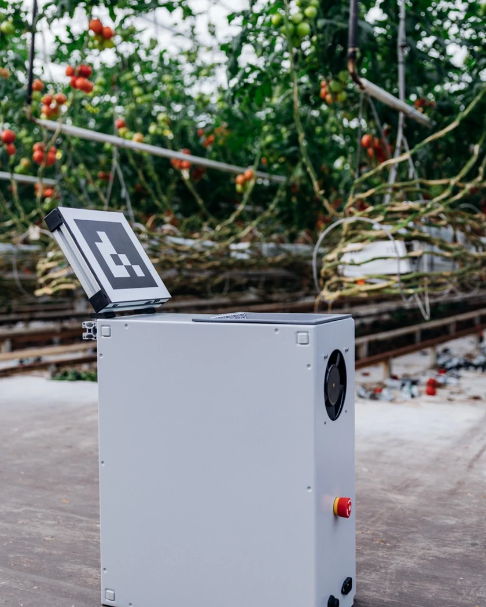
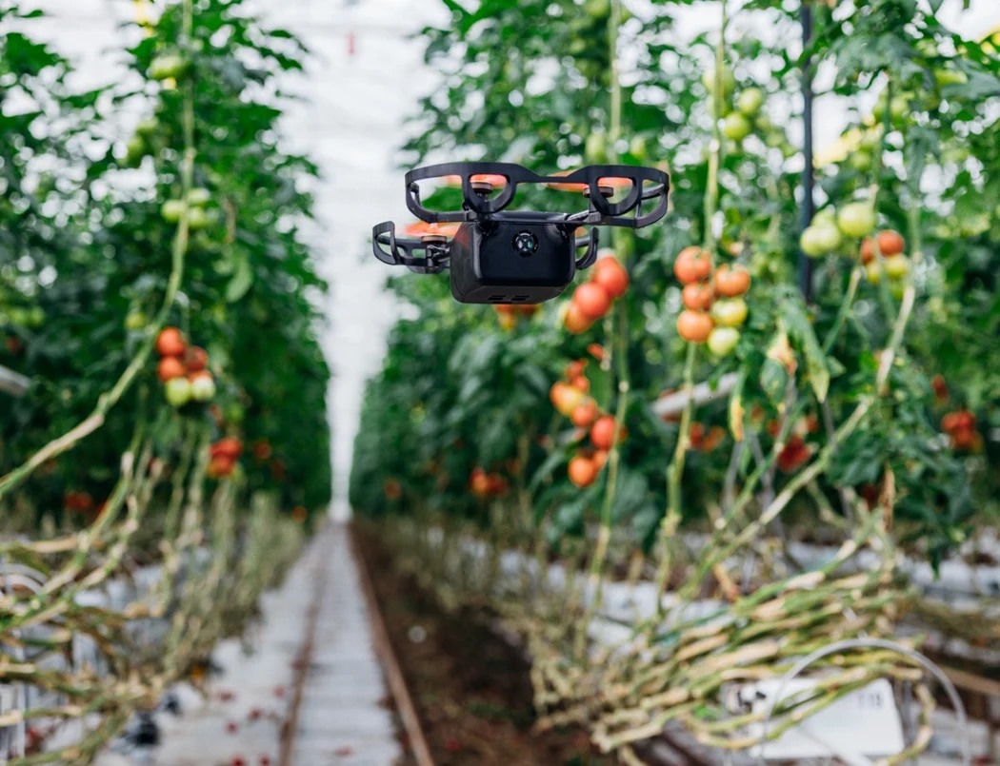
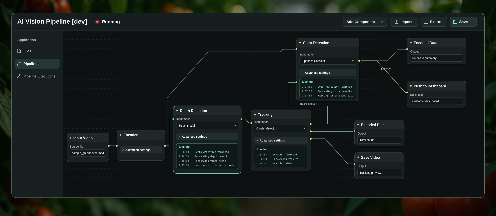

Industry · Avemoy FlexCo
Greenhouse AI & autonomous drone operations
From scheduled drone flights to harvest forecasts. A docking station coordinates the drone, hands off the captured footage for AI processing, and delivers results to the grower’s dashboard.


My contribution
I led development of the AI and software pipelines, from fruit analysis and event-driven services to web-based configuration and integration with the drone and docking station.
Step 1 · Flight operations
Edge coordination pipeline
At the scheduled time, the station contacts the drone’s onboard server, checks readiness, and commands takeoff. It waits for the drone to return and dock, confirms the flight completed, and transfers the raw footage and flight metadata for processing. The station then powers down the drone and charges it until the next flight. Charging can be automatic, manual, or cyclic.

Step 2 · Crop analysis
AI vision pipeline
The AI pipeline receives raw footage and flight metadata, including the tomato variety. It preprocesses the footage and uses depth filtering to isolate a single crop row and suppress the background. It then detects and tracks tomato clusters to count them by row and classifies their ripeness.

Computer vision in four stages
Step 3 · Harvest planning
Harvest forecasts for growers
The system combines row-level counts and ripeness classifications to estimate when the crop will be ready and how much can be harvested. Results go to the grower’s dashboard as estimated tomato cluster counts and tonnes by harvest window.
Watch the public Avemoy demo Hortiscan product overviewFrom the workstation to the greenhouse
We collected experimental footage and discussed the customer’s harvest workflow before training the models and developing the software needed for the site. After installing and commissioning the station at the customer’s greenhouse, we compared our forecasts with the grower’s harvest records for about a month and made adjustments. The system then ran automatically on the configured schedule.
Tools & methods
Python, FastAPI, React, TypeScript, Docker, Linux, Computer vision